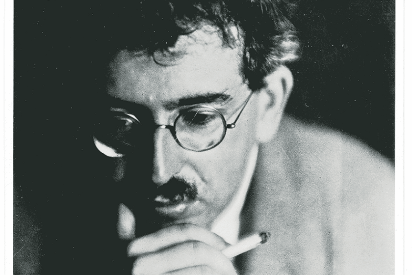

Hashish-ish: On Perception

What does it mean to be sober? I am unsure. It should be a simple matter to answer this question. “Not intoxicated.” This is sober in the words of Merriam-Webster. But what constitutes intoxicated? Says Merriam-Webster: “Affected by alcohol or drugs especially to the point where physical and mental control is markedly diminished.” This is the first listed definition. The second, and final, reads: “Emotionally excited, elated, or exhilarated (as by great joy or extreme pleasure).” Which is it?
Cannabinoids are the molecules responsible for a weed high. While found in the plant, the body produces its own endocannabinoids, “endo-” as a prefix denoting “endogenous,” or produced in the body. Prominent substances often find their roots in such “endo-” molecules. “Endorphins?” Endogenous opioids. Endocannabinoids do not comprise psychoactive molecules like THC, or tetrahydrocannabinol, the principal exogenous cannabinoid responsible for weed’s oft-sought high. The body cannot spontaneously induce a psychoactive state; spontaneous combustion is more likely, which is to say, while spontaneous combustion is implausible, a spontaneous high of this sort is impossible. Indeed, “of this sort,” for, contrarily, endogenous opioids function similarly to their exogenous counterparts—heroin, morphine. Is a spontaneous high of this sort, then, possible? Biologically, no; a spontaneous endogenous opioid high is equally impossible (runners who tell of the elusive “runner’s high” may feel inclined to disagree) due to the brain’s self-imposed limitations, its checks and balances. None of the molecules within these endogenous classes contribute to any “highs” comparable to those associated with their respective substances. But chemically, their similarities remain. This slight overlap represents the difficulties one faces when considering perception; for what does it mean to perceive? Sober perception—or, a more constricting word, normal perception—may allow for a broad spectrum of perceptual forms.
I reiterate: If “sober” means “not intoxicated,” then what does it mean to be intoxicated? To determine what it means to be sober, we must first establish what it means to be high, and in so doing, we might find that the two are more alike than Merriam-Webster seems to suggest.
Walter Benjamin’s “Hashish in Marseilles” is an essay that chronicles his perceptual experience while under the influence of hashish, which Benjamin calls his “trance.” Benjamin here acts as a psychologist, anthropologist, and cartographer, with himself and Marseilles as his subjects, filtered through the haze of hashish. But Benjamin’s descriptions are not as sensational as one may expect. Cannabis is not a psychedelic, and it does not produce visual hallucinations that might make for more engaging material. As a result, Benjamin glosses over the majority of his hashish high, opting instead to focus on the latter part of his “trance” after its principal effects had already waned: “At last I left the hotel, the effects seeming nonexistent or so weak that the precaution of staying at home was unnecessary.” The bulk of the essay follows.
I have not smoked weed since I was sixteen years old. I am twenty-three. The last time I smoked weed, then, was seven years ago. I believe it was the summer, July, maybe, and I was on a beach that my friends and I frequented. A much different setting than the streets of Marseilles, this beach was located on a suburban coast in a mostly private setting with no opportunity (or fear) of running into any faces I did not know. Benjamin, when confronted with such faces, reveled in them: “I positively fixed my gaze on the faces that I had around me.” I wonder whether my experience would have been the same if there were, in my presence, unknown faces. Falling into a certain comfort, I smoked too much. I believe I was also drunk. Much like Benjamin’s omission, I cannot remember the principal high; I do remember the aftermath, however. I woke up the next morning feeling strange. Not hungover, but off. Maybe I’m still high, I thought. I prepared myself for the day, and this feeling lingered. I continued to experience the sort of perceptual anomalies typical of a weed high: strange depth perception and dizziness, primarily. The next day, this feeling remained. And the next day.
The feeling never went away. It subsided, yes, and the perceptual anomalies left, but to this day, seven years later, I cannot discern whether my perception returned to “normal.”
What is normal? I am unsure.
I have come to understand this feeling as a chronic derealization. Derealization is a dissociative disorder, a temporary state of detachment that functions as a defense mechanism of sorts for the brain. It is very possible that, in the midst of the high I cannot remember, I had an exaggerated anxiety response. Likely, this derealization came as a result—but I cannot say, for I do not remember. The important thing to note for our purposes is that derealization is, in fact, a form of perception that strays from what one may at first consider normal. That it is a different form is crucial.
To Jean Baudrillard, simulacra are images that have replaced reality with only a representation of the real. With the essence of things removed, or perhaps never there to begin with, what remains are surface impressions. The perceptual implications of this type of abstraction cannot be ignored. Hashish forces Benjamin’s perception to happen at the level of simulacra: “[E]vents took place in such a way that the appearance of things touched me with a magic wand, and I sank into a dream of them” (emphasis mine). Benjamin finds that these surface representations of things lead to deeper associations; but, as it happens, such deeper associations are not what they seem—or are only what they seem—for they, too, are simulacra, images and associations fluctuating in and out of the foreground, sometimes themselves fluctuating, morphing with the slightest change in perspective. Indeed: sinking into a dream. Such images almost battle for attention, as Benjamin’s perception is a passive process that sees the world unfolding autonomously around him: “I walked across the entire floor to the opposite end to sit at a smaller table that became visible to me only as I reached it.” In other words, Hashish makes perception an incidental affair; it, too, unlocks a new form of perception.
The question then becomes: Is this new form a direct result of the hashish? Or does the hashish unlock something else in Benjamin’s consciousness, something obscure that then gives rise to such cognitive and perceptual mechanisms? It is likely the latter; one could say that hashish removes the brain’s checks and balances. With this understanding, one finds no ultimate difference between hashish and derealization. From a biological standpoint, they are both states of consciousness that stray away from homeostasis, away from normal. How is it, then, that we classify one perceptual experience as a “high” and the other as “sober?”
Perhaps it is now necessary to express what derealization feels like. You may be more familiar with its counterpart, depersonalization; while depersonalization is often described as an out-of-body experience, derealization is the opposite: I, or rather, my senses, feel trapped within the body, alienated, ever so slightly dulled, as if filtered through a pane of frosted glass. This glass is not static. Some days it freezes. Other days, the frosted bits thaw, allowing me a clearer view. This does not always happen uniformly. The glass does not appear to be of equal thickness, and so on these days it will thaw only in parts. Sometimes, mystically, the glass seems to move without my knowledge, placing itself so near my senses that its presence, in the moment, is undetectable, becoming perceivable only in retrospect with the measurable distance of memory. This is the way I tend to describe it to people (not in so many words), though I admit the more time passes, the more difficult it becomes to describe.
One might say my everyday perceptual experience is hashish-like. Hashish-ish. But it is, in effect, my new normal. I am sober.
One must have a baseline from which one can notice differences to relay information regarding the form of perceptual experience one has. Perceptual experience itself is quite easy to impart, but the moment one attempts to grapple with its form is where issues may arise. This is, among other reasons, what makes Benjamin’s hashish so compelling. He tells of the mundane filtered through frosted glass. The frosted glass is the form, and in his essay, the frosted glass takes precedence, as it does with sight: when one looks through glass, one sees glass first. It is the same with me—only, as time passes, I find it more difficult to determine whether the glass was ever not frosted to begin with.
Often I find myself thinking of simulacra. From a surface reading of the term (a pun), it appears derealization has made me incapable of grasping the essence of things; the glass made a tangible barrier, and tangible indeed: perception of course includes touch. But it seems there is another pane of glass, one I often forget about for it is placed behind me and out of sight —a pane between me and myself, my senses themselves severed. Trapped in a sort of ontological oblivion, where do I go from here?
Perhaps I should go to the Cannebière. The Cannebière is the acting threshold of Benjamin’s so-called “trance.” It, too, is a barrier of sorts. He strolls asymptomatically toward and around the Cannebière, never quite reaching (and really, actively avoiding) but remaining within its sight–that is, until the trance’s final moments: “The trance abated when I crossed the Cannebière.” This fittingly marks the last paragraph of the essay.
Surely it cannot be so simple, the Cannebière as a traversable barrier. But maybe it is: I would like to think we are all strolling toward and around something in the distance.
I wonder what my barrier is. I recall those first few weeks and months wondering, Is this forever? The year 2020 jumped out at me then. I used to imagine myself having returned to “normal” upon my high school graduation that year, the turn of a decade, beginnings anew. Instead, the world itself fell into a derealized suspension. It felt like a sort of punishment. It was also a relief: They know what it’s like now. I no longer consider the future and wonder whether things will change, but that is not to say I have lost hope. Hope for me takes a more nebulous form, one that remains detached from dates. For the one who hopes, dates act as nefarious lighthouses, because, as I have experienced, while dates coagulate hope, give the one who hopes something to strive toward, a threshold, dates also make hope more volatile, liable to vaporize the moment they pass. The goal of hope is for it to dissolve, but through a transaction: I give you my hope; now give me what I was hoping for. Hope requires maintenance because we must sustain it; it is the worst scenario if we do not sustain hope ourselves, because then hope will die of natural causes, the fading of the years. My nebulous hope may require more maintenance, but this is accounted for: I have fashioned my hope to remain content with the uncertainty of being detached, waiting; and although it seldom makes its presence felt, I know it is there, always floating in the periphery, like the parent too shy to call out yet proud nonetheless.
One might say I accept my circumstances as they come. I will not act as if this acceptance does not arrive carrying with it a certain helplessness, and perhaps I feel more at the whim of nature as a result. As Benjamin writes: “[Nature] now throws us, without hoping or expecting anything, in ample handfuls to existence.” I, too, would like to say, then, in the spirit of not hoping or expecting: that it is only a matter of time before I cross the Cannebière, before nature herself hurls me across in ample handfuls, before I make my hopeful transaction. Until then, I remain not intoxicated.